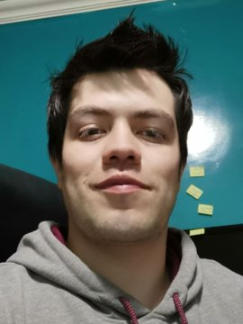

Stan Mora
Software Engineer | Data Science (ML/AI) & Cloud
Ingeniero de Software | Ciencia de Datos (ML/AI) y Cloud
I build machine learning systems and the cloud infrastructure they run on. After 8+ years in software, DevOps and ML, I'm completing a Master's in Data Science and working toward research at the intersection of AI and quantum computing.
Construyo sistemas de machine learning y la infraestructura cloud donde se ejecutan. Tras más de 8 años en software, DevOps y ML, estoy culminando una Maestría en Ciencia de Datos y orientando mi trabajo hacia la investigación entre la IA y la computación cuántica.
A Bell state followed by a trainable rotation: the smallest building block of a quantum ML model.
Un estado de Bell seguido de una rotación entrenable: la pieza mínima de un modelo de quantum ML.
Click a figure to replay it.Haz clic en una figura para repetir la animación.
Experience
Experiencia
-
Software & DevOps Developer
Desarrollador de Software y DevOps
- Agile planning and requirements with Scrum and Kanban.
- CI/CD pipelines with secure-coding practices.
- AWS architectures for web applications, integrated with on-premises VMware ESXi.
- Planificación ágil y levantamiento de requerimientos con Scrum y Kanban.
- Pipelines de CI/CD con prácticas de código seguro.
- Arquitecturas en AWS para aplicaciones web, integradas con VMware ESXi on-premise.
-
Machine Learning Developer & Researcher
Desarrollador e Investigador de Machine Learning
- NLP models for text classification and automated response generation.
- Assistance bots and agents deployed to production with Python, TensorFlow and PyTorch.
- Modelos de NLP para clasificación de texto y generación automática de respuestas.
- Bots y agentes de asistencia en producción con Python, TensorFlow y PyTorch.
-
Functional Analyst
Analista Funcional
-
Information Manager
Gestor de Información
-
Research Assistant
Asistente de Investigación
- Optimization of acoustic absorption coefficients for numerical simulation.
- Machine learning algorithms for data projection and forecasting.
- Optimización de coeficientes de absorción acústica para simulación numérica.
- Algoritmos de machine learning para proyección y predicción de datos.
-
Developer
Desarrollador
Education
Educación
Master's in Data Science
Maestría en Ciencia de Datos
Systems Engineering (Computer Science)
Ingeniería en Sistemas
First student in the Faculty to graduate through the scientific-research track. Clear Minds Award for the development of optimization algorithms.
Primer estudiante de la Facultad en graduarse por la vía de investigación científica. Premio Clear Minds por el desarrollo de algoritmos de optimización.
Research
Investigación
Mora, G. (2017). Optimization of absorption coefficients for numerical acoustic simulation.Optimización de coeficientes de absorción para simulación acústica numérica. Latin American Journal of Computing, 1, 1–13.
Current interests: quantum machine learning, quantum algorithms and optimization.
Intereses actuales: quantum machine learning, algoritmos cuánticos y optimización.